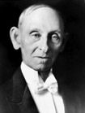

FORMER JUDGES
Judge Ulric Z. Wiley
Ulric Z. Wiley born in Jefferson County, Indiana on November 14, 1847 the
son of a minister. He graduated from Hanover College in 1867 and became a
schoolteacher. In 1871 he studied law in Indianapolis under William Wallace and
enrolled at Northwestern Christian University (now Butler University), where he
graduated in 1873.
In 1874, Judge Wiley married Mary Cole and moved to Fowler to begin practicing
Law. After serving as Benton County attorney, he was elected to the Indiana
General Assembly in 1882.
In August 1892, Governor lra Chase appointed Judge Wiley as Judge of the
Thirteen Judicial Circuit. He was elected to the position in the fall election of 1892.
Judge Wiley was then elected as a Republican to the Indiana Appellate Court in
1896, and served from January 1, 1897, to January 1907. He was Chief Judge
during for different terms-May 1897, November 1899, may 1902 and May 1905.
He died at home in Indianapolis on January 5, 1929.
son of a minister. He graduated from Hanover College in 1867 and became a
schoolteacher. In 1871 he studied law in Indianapolis under William Wallace and
enrolled at Northwestern Christian University (now Butler University), where he
graduated in 1873.
In 1874, Judge Wiley married Mary Cole and moved to Fowler to begin practicing
Law. After serving as Benton County attorney, he was elected to the Indiana
General Assembly in 1882.
In August 1892, Governor lra Chase appointed Judge Wiley as Judge of the
Thirteen Judicial Circuit. He was elected to the position in the fall election of 1892.
Judge Wiley was then elected as a Republican to the Indiana Appellate Court in
1896, and served from January 1, 1897, to January 1907. He was Chief Judge
during for different terms-May 1897, November 1899, may 1902 and May 1905.
He died at home in Indianapolis on January 5, 1929.
